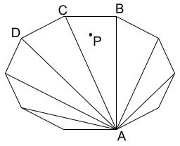
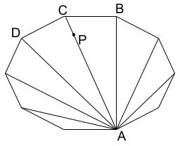
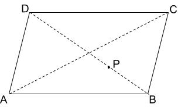

Say, we have just one polygon and the point we need to capture (called $$$P$$$ henceforth). We need a way to check if that point is inside the polygon or not. This problem is known as Point in Polygon and ray casting is one of the standard ways to solve it. Now, for the first test set, we can generate all possible simple polygons and check the minimum perimeter polygon which contains the point. Following steps show how to generate all simple polygons:
Runtime Analysis: To generate $$$R$$$ distinct permutations from
$$$\mathbf{N}$$$ points will take $$$\mathbf{N}$$$ permutations $$$R$$$ (called $$$\mathrm{P}^{\mathbf{N}}_R$$$)
and then checking for intersection of any two edges will take $$$(R - 1) \times
(R - 2)$$$. Then for each polygon it will take $$$(R - 1)$$$ checks for ray
casting. So, total runtime will be:
$$$O(\sum_{R=3}^{\mathbf{N}}\mathrm{P}^{\mathbf{N}}_R \times (R - 1) \times (R - 2) \times (R
- 1) = O(\sum_{R=3}^{\mathbf{N}}\mathrm{P}^{\mathbf{N}}_R \times R^3) = O(\mathbf{N}! \times
\mathbf{N}^3)$$$.
Note: This might look like it will TLE but most of the checks would not be
performed. We can improve this runtime, though, using convex
hull. A convex hull of a simple polygon will always include the initial
area of a simple polygon and will have smaller or equal perimeter. The runtime
in that case will be:
$$$O(\sum_{R=3}^{\mathbf{N}}\mathrm{C}^{\mathbf{N}}_R \times (R \times log(R)) \times (R - 1))
= O(2^\mathbf{N} \times \mathbf{N}^2 \times log(\mathbf{N}))$$$
Notice that if a point is inside a polygon with more than $$$4$$$ points, we can reduce it to a triangle ($$$ABC$$$ in the image below) or a quadrilateral ($$$ABCD$$$ in the image below) which contains the point.
 
Note: It can be some other triangle/quadrilateral in the above polygon, the image is just for illustration.
So, we can generate all possible quadrilaterals and triangles and then check the minimum perimeter polygon which contains the point.
Runtime Analysis: We can generate all sets of points with set size being $$$4$$$ (for quadrilateral) and $$$3$$$ (for triangle) from the given set of points taking $$$O(\mathbf{N}^4 + \mathbf{N}^3) = O(\mathbf{N}^4)$$$. Checking "Point in Polygon" in this case will be constant time.
The observation required for this set is that if the point $$$P$$$ is on one of the diagonals in the quadrilateral, it must be at the intersection of the diagonals. If it is not, then we can reduce the quadrilateral to a triangle with a lesser perimeter (as in the following diagram, quadrilateral $$$ABCD$$$ can be reduced to triangle $$$ABC$$$).

Another observation is that among the points collinear to $$$P$$$ only one point
closest to $$$P$$$ on both side matters. Other points will always create
quadrilateral with larger perimeter. So, all collinear segments of interest are
unique.
So, for this set we can check all the triangles first. Then to generate
quadrilaterals, we can find the diagonals as:
Runtime Analysis: The triangle case remains the same, taking
$$$O(\mathbf{N}^3)$$$. For quadrilateral, we will generate at most $$$\mathbf{N} / 2$$$ sets
of points in $$$O(\mathbf{N})$$$ and then we can check all combinations of these
segments for possible quadrilateral candidates in $$$O((\mathbf{N}/2)^2)$$$. So, total
runtime will be:
$$$O(\mathbf{N}^3 + \mathbf{N} + (\mathbf{N}/2)^2) = O(\mathbf{N}^3)$$$